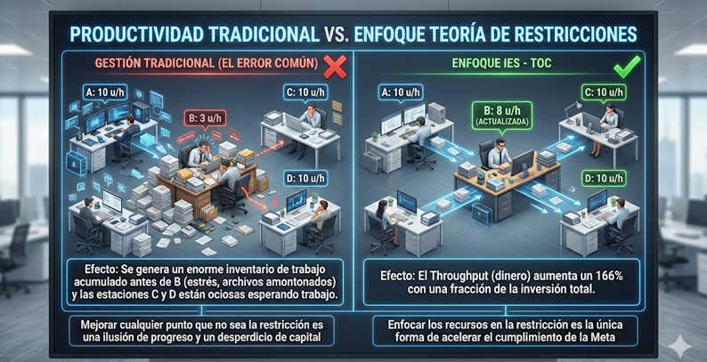

Teoría de las restricciones TOC
La Ciencia del Enfoque.

En Ingeniería Esencial, no vemos a las organizaciones como una suma de departamentos aislados, sino como una cadena de eventos interdependientes. La fortaleza de cualquier cadena está determinada siempre por su eslabón más débil: su restricción. La Teoría de Restricciones (TOC) es la metodología que utilizamos para identificar ese eslabón y asegurar que toda la energía de la organización se concentre en fortalecerlo.
Todo Sistema Tiene un Objetivo
Para aplicar TOC, lo primero es definir la Meta del sistema. Sin una meta clara, es imposible medir el desempeño o identificar qué nos está deteniendo.
- Empresas Privadas: Su objetivo es generar dinero ahora y en el futuro. Aquí, la restricción suele ser aquello que limita el Throughput (flujo de ingresos).
- Organizaciones No Gubernamentales (ONG): Su objetivo es el impacto social o la asistencia entregada. La restricción es aquello que impide ayudar a más personas con los recursos disponibles.
- Instituciones Educativas: Su objetivo es el número de egresados titulados con alto nivel de competencia. La restricción puede estar en los procesos de titulación o en la deserción temprana.
- Instituciones de Salud: Su objetivo es la recuperación y bienestar del paciente. La restricción suele ser la disponibilidad de infraestructura crítica o tiempos de espera en diagnóstico.
Ayuda a tu empresa a enfocarse en lo importante
En la gestión tradicional, se intenta mejorar todo al mismo tiempo, lo que dispersa los recursos y agota al personal. TOC nos enseña que una mejora en cualquier punto que no sea la restricción es una ilusión. Nosotros te ayudamos a ignorar el ruido operativo y enfocarte exclusivamente en el punto que multiplicará tus resultados.
Mejora la productividad y rentabilidad
Al gestionar la restricción, el flujo de valor se acelera. En el ámbito empresarial, esto se traduce en una reducción de inventarios, menores gastos de operación y, sobre todo, un aumento drástico en la velocidad de generación de flujo de efectivo. No se trata de trabajar más duro, sino de hacer que el sistema trabaje más rápido.
Es aplicable para cualquier área de tu empresa
La TOC no es solo para manufactura. Es una filosofía de pensamiento sistémico aplicable a:
- Finanzas.
- Ventas.
- Proyectos.
- Tecnología.
¿Estás listo para que tu organización alcance su siguiente nivel?
Si sientes que tu equipo trabaja al máximo pero los resultados no se reflejan en el cumplimiento de tus objetivos, es probable que estés empujando contra una restricción no identificada.
¿Estás interesado en saber más?
Descubre cuál es el eslabón que detiene tu crecimiento